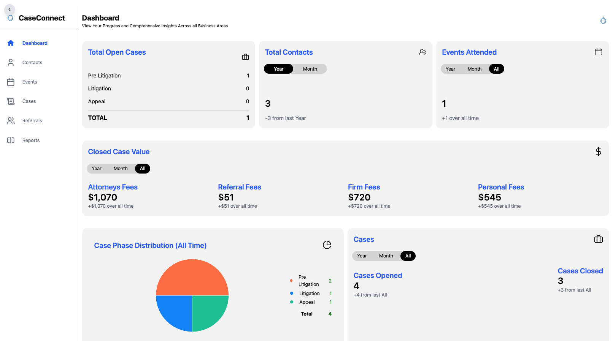
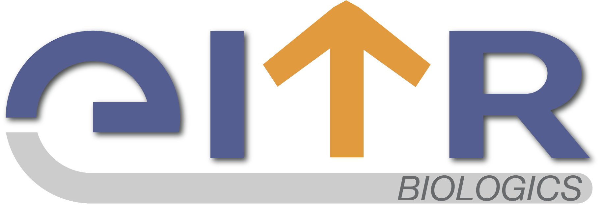
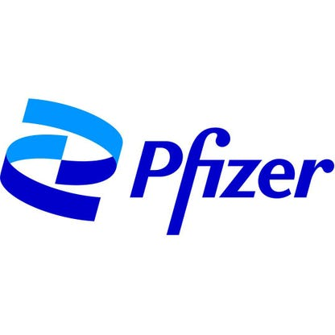
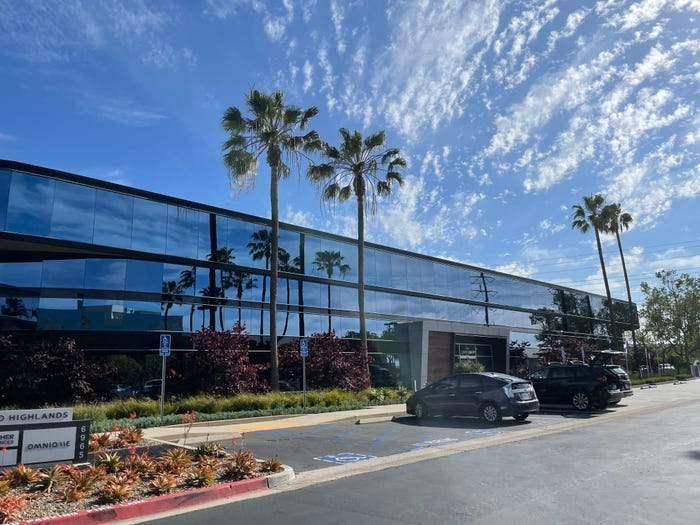
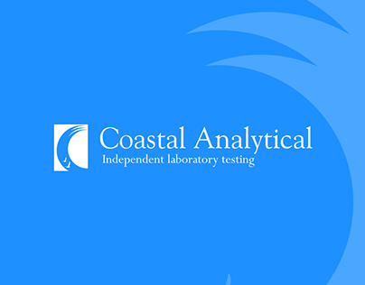
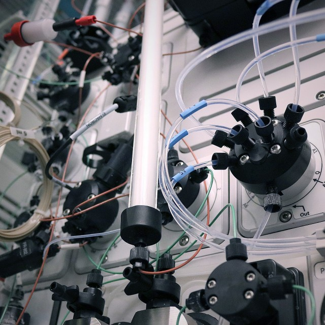
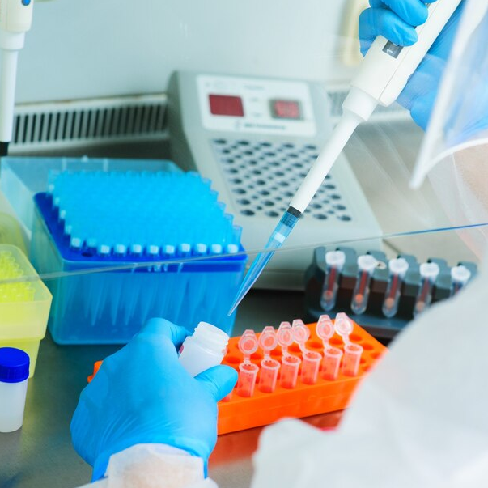
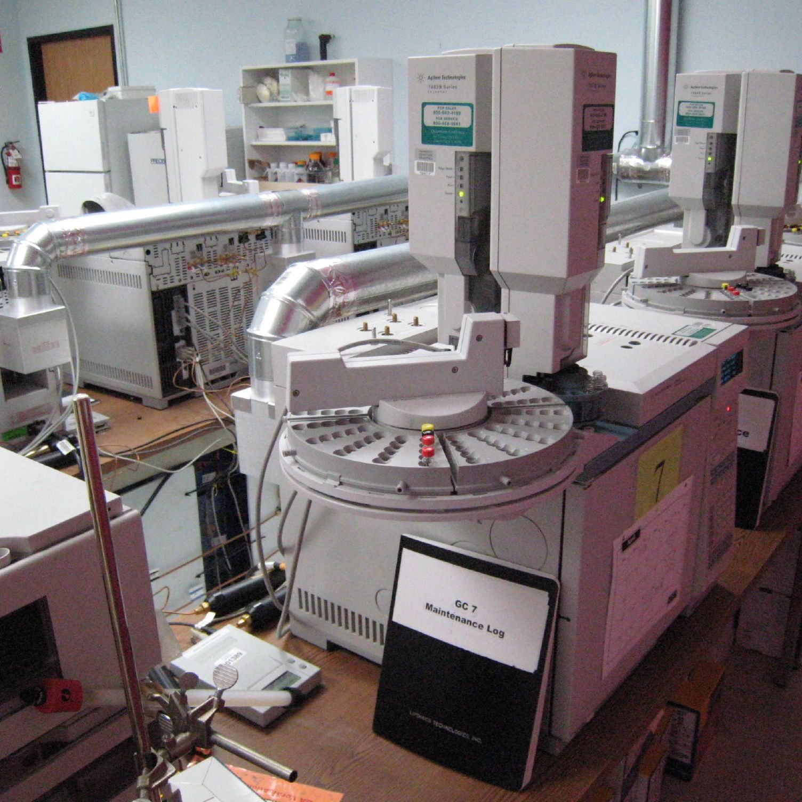

Protein Purification, Characterization
Support for Purification Group
Affinity chromatography, analytical and preparative size exclusion chromatography, magnetic bead purification, bioconjugation, FPLC, HPLC, Mass Spec, SEC-MALS, SDS-PAGE
Perceptive, Creative, Independent
Highly and self motivated bilingual individual who thrives in fast paced environments, enjoys complex problems and is a problem solver by nature. An individual who is dedicated to his work, with progressive, diverse experience in the biotech, pharma, analytical, and software industures. Main work experiences include biotherapeutic protein production, purification, characterization, molecular biology, analytical chemistry, and full stack web development.data structures & algorithms, bioinformatics, information processing, machine learning, and life sciences. My goal is to deliver custom software solutions to meet complex business requirements in competitive markets.Respected as a motivational, influential, and detail-oriented leader and collaborator who guides team members in achieving on-time, budget-conscious project completion while always striving to exceed expectations. Builds and maintains productive professional relationships with colleagues and clients, driving business objectives through a people-focused approach.
Academic qualifications include a Bachelor of Science in Neurobiology, Physiology, and Behavior and a Minor in Computer Science from the University of California – Davis. Out-of-the-box thinker committed to implementing continuous process improvements to enable growth.
Developed both front-end and back-end for Case Connect, a custom CRM for a law firm based out of Las Vegas, Nevada. Created and manage the databases as well (Mongodb). Site is hosted on a VPS server, which I also maintain and manage. Regularly develop and push updates to the site at customer's request.
Remote, October 2025 - Current

eveloped both front-end and back-end for Case Connect, a custom CRM for a law firm based out of Las Vegas, Nevada. Created and manage the databases as well (Mongodb). Site is hosted on a VPS server, which I also maintain and manage. Regularly develop and push updates to the site at customer's request.
Remote, October 2025 - Current

Worked as a Research Associate performing protein purification for novel biotherapeutic drugs targeting diseases like Ebola, SARS, Nippah. Performed analytical assays like kinetics and binding studies to determine binding efficacy and neutralization, as well as analytical QA of drug products.
San Diego, January 2024 - March 2025
Worked as a Research Associate performing protein purification for novel biotherapeutic drugs targeting diseases like Ebola, SARS, Nippah. Performed analytical assays like kinetics and binding studies to determine binding efficacy and neutralization, as well as analytical QA of drug products.
San Diego, January 2024 - March 2025
Support for the BioMedicine Design Biotherapeutics Discovery Group responsible for discovering biotherapeutic lead drug candidates for Pfizer in La Jolla. Performed protein purification via FPLC, batch binding, and magnetic beads and performed characterization via a wide range of analyses to to hand off to downstream biologists to perfrom further experiments. Support for expression team such as molecular cloning, transient cell transfection, cell transformation, DNA plasmid preparation, and cell harvesting. Performed method development for HPLC and FPLC instruments as well as routine QC analyses on finalized purified protein constructs.
San Diego, November 2021 - December 2023

Support for the BioMedicine Design Biotherapeutics Discovery Group responsible for discovering biotherapeutic lead drug candidates for Pfizer in La Jolla. Performed protein purification via FPLC, batch binding, and magnetic beads and performed characterization via a wide range of analyses to to hand off to downstream biologists to perfrom further experiments. Support for expression team such as molecular cloning, transient cell transfection, cell transformation, DNA plasmid preparation, and cell harvesting. Performed method development for HPLC and FPLC instruments as well as routine QC analyses on finalized purified protein constructs.
San Diego, November 2021 - December 2023

Worked as a clinical lab technician for Helix biotech performing automated RNA extraction and PCR-based genetic testing.
San Diego, August 2021 - November 2021
Worked as a clinical lab technician for Helix biotech performing automated RNA extraction and PCR-based genetic testing.
San Diego, August 2021 - November 2021
Setup, prepared, troubleshot, and ran Gas Chromatography Mass Spectroscopy, Liquid Chromatography Mass Spectroscopy, HPLC, Atomic Absorption Spectroscopy, and PCR analytical chemistry equipment and methods to analyze heavy metals, mycotoxins, microbes, pesticides, and solvents of agriculture-based consumer products in accordance with state regulations.
San Diego, February 2021 - August 2021

Setup, prepared, troubleshot, and ran Gas Chromatography Mass Spectroscopy, Liquid Chromatography Mass Spectroscopy, HPLC, Atomic Absorption Spectroscopy, and PCR analytical chemistry equipment and methods to analyze heavy metals, mycotoxins, microbes, pesticides, and solvents of agriculture-based consumer products in accordance with state regulations.
San Diego, February 2021 - August 2021
Full stack web engineer for Unearth Campaigns based out of Downtown Sacramento, helping on mostly backend JavaScript and PHP and client side HTML, JavaScript, and CSS.
Sacramento, August 2019 - June 2020
Full stack web engineer for Unearth Campaigns based out of Downtown Sacramento, helping on mostly backend JavaScript and PHP and client side HTML, JavaScript, and CSS.
Sacramento, August 2019 - June 2020
Featured Skills of Interest

Support for Purification Group
Affinity chromatography, analytical and preparative size exclusion chromatography, magnetic bead purification, bioconjugation, FPLC, HPLC, Mass Spec, SEC-MALS, SDS-PAGE

Support for Expression Group
Molecular cloning, Gibson assembly, cell transfection (CHO, Expi293), cell transformation, DNA plasmid prep, PCR, qPCR, DNA gel purification, DNA sequence verification, gel electrophoresis

Analytical Assays
Analytical analyses of compounds with instruments inlcuding Mass Spec, HPLC, GCMS, LCMS, Atomic Abosorption Spectroscopy, qPCR
HTML5, Python, PHP, Databases
As an experienced full stack web developer I am dedicated to helping make your creative ideas come to life. Experienced in backend JavaScript as well as API request and response handling for data management.
I hope we can collaborate soon on future projects